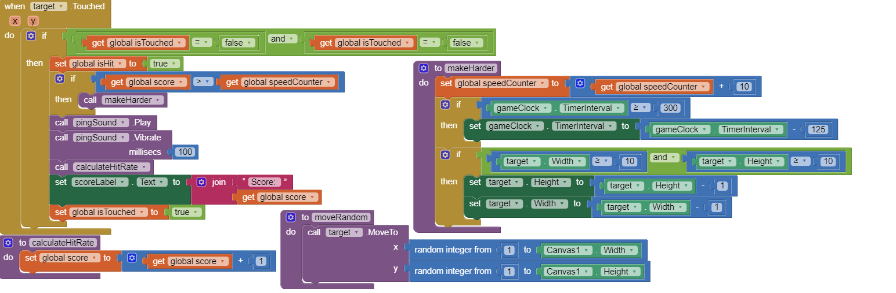
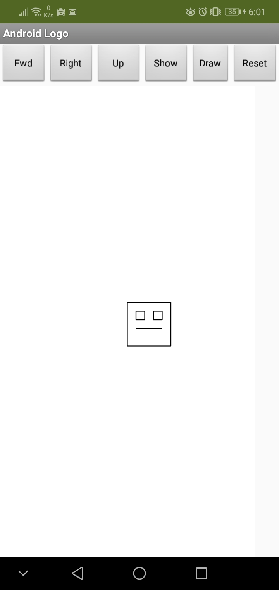

Chapter 4 Questions
Unit 4.2
1. This app presents a new type of event which you haven't encountered before. What is that new event? How often is it triggered?
The new event is the clock event handler which triggered whenever the timer interval is met.
2. Consider the apps you've developed so far. Can you list all the different events your apps have responded to? What other events do you think an app can respond to? Explore some of the components in App Inventor and see what event handlers they have.
The apps that we have created has responded to events such as phone shakes, and phone movement. Some other events that the mit app inventor allows are after recording, or when a recording starts.
3. What are the advantages of writing procedures in programming? Use the procedures you wrote for this app as examples in your response.
The advantages of writing procedures in programming are to simplify the main code into smaller chunks of code that can be easily called in the future. In our example, the procedure helps manage the random placement of the target whenever the timer for the clock goes off.
Unit 4.3
1. Describe the purpose of each enhancement that you added to your app. Give brief descriptions of the enhancements and provide screenshots of important blocks and describe how you used them to solve certain programming problems. Include these descriptions in your write-up, below.
An some enhancements that we made in our project were the increasing difficulty, moving the target a random position, and increasing the score whenever the user hits the target. To increase the difficulty, we set a variable to be the score which the difficulty increases. We used a procedure to make the target smaller and the interval for moving the target to a random point shorter, then we increased the variable to a value higher than the score and will increase the difficulty later. We implimented the random target position by creating a procedure to move the sprite to a random number on the x and y axis of the canvas. We inplimented the score by creating a variable that would incremented by 1 everytime the user clicks the target. To solve some problems that would come up such as clicking multiple times on the target for the same score, and the difficulty getting impossibly hard, we implimented a few fixes. For the score, we had a boolean change to true or false depending on if the user clicked the target, if so it would increase the score and be set back to false. For the impossible difficulty, we created a conditional to limit the timer length and the size of the target after a certain value.
2. When the user touches an ImageSprite, both the Canvas.Touched and ImageSprite.Touched events are triggered. This is important for more complex games. For instance, suppose there are "good" and "bad" sprites in your game. If you hit one, you earn a point. If you hit the other, you lose two points. If you hit the Canvas and don't hit the ImageSprite, you lose 1 point. How would you code this?
To code hitting both the canvas and the image sprite, I would get their event handlers for if a user clicked on the screen and then lower the life variable if the user touched the canvas, and increasing the user's score if they touch the image sprite.
3. How do you speed up the movement of the ImageSprite? What is the fastest it could move?
The fastest that the ImageSprite could move is as fast as the timer could go which is 1 millisecond.
Unit 4.4
1. Include a screenshot of your app's face drawing, and the code involved, showing the use of a loop and a procedure. You can take a screenshot on most Android devices by pressing the power button and the volume down button and the same time and then emailing the photo from the gallery to yourself, or uploading the image to Google Drive. To practice for the Create task, describe how two of the algorithms (procedures that you wrote) in the code combine to form a bigger algorithm (the drawFace procedure).
The procedures that I wrote within the code, drawMouth and drawHead, combine to form the drawFace procedure as they allow the pen to draw the mouth and the head of the face. Those procedures allow the pen to draw on the canvas, allowing the drawFace procedure to finish its drawing.
2. Can you draw a triangle with this set of Logo commands? Discuss how or why not.
You cannot draw a triangle with the set of Logo commands because the turns for the pen aren't at an angle that would allow you to create a triangle. There are only 90 degree angle turns and no 45 degree angle turns that would create a triangle.
3. Discuss: If you were designing the Logo language, how would you change some of our basic commands so that it would be easy to draw a triangle and easier to draw other shapes -- i.e., what should the basic commands do that would make drawing easier.
If I were to design the Logo language, I would allow the function adjust the angle that the pen turns to allow for me to create a triangle easily. A basic command would be to allow a turn 45 degree angle which would allow for a equilateral triangle that can be created easily.
4. What weaknesses do you find in using the procedures (the abstractions) we gave you -- forward, turn -- for drawing simple shapes? How would you change the definitions of these procedures to make it easier to draw shapes? Give a specific example that illustrates how a more powerful set of procedures would improve things.
A weakness I found in using the procedure is that lack of size that we sould use. The procedure also doesn't give and hints that would make the process easier. If I were to change the procedure, I would give some more specifice instructions, such as create a head with a 2 lines on each side, this would allow the user to have a specific size to use for the image they are going to make.
Unit 4.5
1. Write an if/else statement to express the following real life situation. Mary likes ice cream and always chooses chocolate unless there is no chocolate in which case she chooses strawberry. But if there’s no strawberry either then she settles for vanilla, which, for some reason, is always available.
if(ice cream === chocolate)
{
choose(chocolate Ice Cream);
} else if (ice cream === strawberry)
{
choose(strawberry Ice Cream);
} else
{
choose(vanilla Ice Cream);
}
2. We didn’t need it for the loop in this lesson, but the number element in the For each number loop is a local variable whose value changes automatically on each iteration of the loop. For example, in this loop number would start at 1 and then go to 2, 3 and 4. And this value can be used in the body of the loop, as shown in this example. Given that, trace through this loop and figure out what value global sum would have when the loop finishes.
10
3. App Inventor’s random-integer block is an abstract model of randomness -- i.e., an abstraction of real randomness such as flipping a real coin. What would you say about the random-integer block if you ran the coin flipping simulation 10,000 times and the result was that it came up heads 55% of the time?
If the results after 10,000 tests were 55% heads, than I would say that it was all random for that result to happen.
Unit 4.6
1. (POGIL) According to your results, does App Inventor's PRNG provide a good model of randomness?
According to the results, App inventor does a decent job at randomizing the heads and tails as the head count total after the 20 tests of 100 flips were nearly equal to each other.
2. (POGIL) A friend claims that flipping a coin 100 times and finding that it comes up heads only 45% of the time shows that the coin is biased. How should you reply?
A response that we would reply with is that you’re not doing it enough to get a more equal result. The coin flip is not always 50/50.
3. Because we are using a coin flip app, this experiment really tests only that App Inventor's random integer block generates a 1 around half the time. Is this a sufficient test for App Inventor's PRNG? What other experiments might you do to increase your confidence in App Inventor’s PRNG?
This is a sufficient test that app inventor has a good prng because it tests the results of a random number over a period of trials. To make sure that we are confident of the result, we should have a lot more tests to see if the results are still almost equalt to 50/50.
Unit 4.7
1. Consider the following Dilbert cartoon? Would it be possible for a PRNG to spit out 6 NINEs in a row?
It is possible for a PRNG to spit out 9 nines in a row, but it would be an extremely luck occurrence.
2. Are slot machines fair? Why or why not?
Slots machines are fair because all of the results are always random. Because the RNG chips within each slot machine runs every millisecond, the results that a user gets are as random as it can be, which makes it fair.
3. Is it possible to devise a method that would allow you to win consistently on a slot machine?
No, there is no method to constantly win at a slot maching because the RNG chips within them are always making random numbers.
Unit 4.8
1. What are the main differences between Bill Nye's solar system model and the Second Life model?
Bill Nye's solar system model was different compared to the second life model as it had more realistic scale of the distance between each planets and their size. Second life on the other hand places all the planets close together with sizing that is not accurate.
2. (POGIL) What would happen if there were lots more wolves than there are bunnies? Would the wolves live forever? Record your hypothesis, prediction and experiment results.
No, the wolves would not live forever because everything would die. The rabbits would die off first because they are being hunted by the wolves, and since there’s only a limited amount of rabbits, there would be nothing left for the wolves to hunt eventually, and they die off.
3. (POGIL) This model chose to include certain features and exclude other features. For example, this simulation only includes rabbits, wolves, and grass but there are other predators of rabbits and other food sources for rabbits. Why do you think the creators focused on these data elements and not others? How might this introduce bias (concentration on or interest in a particular area) into the simulation?
The person wanted to test the relationship between the wolves and the bunnies and grass. Any other factors could shift the population of both rabbits and bunnies leading to a skewed result of population sizes. Adding more factors into the simulation would introduce bias as the added factors would change a certain variable in the relationship between bunnies and wolves.
Unit 4.9
1. Which generation of the 4-bit simulators above is the most abstract? Why?
Generation 2 of the 4 bit simulators is the most abstract as it uses letters instead of numbers to represent that bits.
2. Explain the purpose or function of the RAM and the CPU.
The purpose of the ram is to be the temporary memory that the cpu stores inside that will be used by the cpu later in the session. The cpu does the calculations and stores data for temporary or permanent use.
3. Describe in your own words the difference between the fetch and execute steps.
The difference between fetch and execute is that fetch takes information that can be then used by the computer. Execute actually runs the fetched code to display the results.
4. Summarize the differences between assembly language and machine language programming.
Assembly languages are written by humans that must be compiled by a compilter for the computer to understand while machine language programming, write machine code that can be understood by the computer without any compiling.
Unit 4.10
1. Is it possible to identify someone, perhaps a patient, knowing just the gender, birth date, and zip code? Why or why not?
It is possible to identify someone based on their gender, birthday, and zip code as within an area, the chances of all three variables matching would be very unlikely which would lead to only one person given which would be the identified person.
2. Are electronic documents like paper documents? Write 2-3 sentences comparing and contrasting them.
Paper documents are like electronic documents but they are different too. Paper documents are more secure and hidden from the public then electronic documents. Paper documents are also easy to get rid of while deleting electronic documents can leave trace bits which can used to retrieve the document.
3. Earlier in the course, you built the Map Tour app. In the final version, what kind of data is collected from the user? Does the user know the data is being collected? Can they opt out of providing data and still use the app?
The data that is collected of the user in the Map Tour app is their location. The user should know that their data is being collected, as map apps need the location of the user to display their location in a variable. Users can opt out of the app taking their location, but they will not have access to their current location data.
4. Is the Privacy Act effective? Explain why or why not.
The privacy act is effective, but can be broken though with loopholes. The act helps protect citizens from government collecting of their data, but in some cases, the government will be able to take the data of an individual for a reason such as terrorism or publish safety.
5. Are you willing to trade some of your privacy for the convenience of having a computer or a company recommend products to you? Why or why not? Under what circumstances?
I would not trade my privacy for advertiment of products to me because on my own, I already research about products a lot. Having my privacy taken away for ads is not beneficial to me.
6. How do we leave digital "footprints and fingerprints?" Do you think this is important for everyone to know? Why or why not?
We leave digital footprints from using maps that has our information on it. Apps such as social media has a lot of our footprints on it. It is important for everyone to know because if someone posts questionable stuff of their account and it is then removed, the original post could have been taken and then be reused in the future.
7. How have social media platforms such as Twitter, Instagram, Snapchat, etc. affected our privacy?
Having a social media platorm lowers the our privacy because the apps collect data from what the user does and whatever posts that the user makes will be on the internet for people to see.
8. In this course, you are building apps that collect data from users, the device, and its sensors. What responsibilities do we have as app developers for the data we collect?
The responsibilities for app developers on the data that is collected is to keep that data away from the hands of people who want the data for harmful purposes. Hackers would want the data to get in to user accounts and steal data that could be important.
9. Search the web for a recent news story that deals with privacy. LINK to the article and then write a paragraph summarizing the article, including any beneficial or harmful impacts on privacy.
Link to articleIn the article linked, it talks about how Facebook is expecting a gigantic fine of 5 billion dollars over and investigation done by the F.T.C which revealed that Facebook is not securing the data of its users. The data that is being taken could have an impact to those that were affected. This is an beneficial impact on privacy as Facebook would now need to do a better job at protecting user data to prevent more fines from the F.T.C.